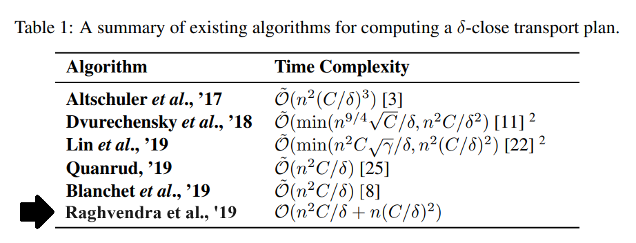

In this post, I describe and analyze a graph theoretic additive approximation algorithm for approximating Optimal Transport. Nathaniel Lahn, Deepika Mulchandani, and Sharath Raghvendra (my former theory and algorithms professor) submitted this algorithm to the arXiv repository originally on May 28, 2019.
Please see the source below for the original paper on this algorithm.
[A Graph Theoretic Additive Approximation of Optimal Transport]

Description
This algorithm applies the traditional framework of augmenting paths for computing an approximate solution to the minimum-cost maximum flow problem to a transport problem. However, in order to this, the problem must only contain integer supplies and demands. So, in order to utilize this algorithm, the input problem must first be transformed to contain only integer demands and supplies. The process of transforming the given problem’s demand and supply values follows:
Transforming Demand and Supply Values
Initially, let \(\varepsilon\) be some constant value such that \(0 < \varepsilon < 1\), and set \(\alpha = \frac{2nC}{\varepsilon U \delta}\). Here, the variables are defined as follows:
- \(n\) is the total number of nodes.
- \(C\) is the largest cost of any edge in the graph.
- \(U\) is the total supply.
- \(\delta\) is the additive error.
Now, let \(\mathcal{I}\) be the input for the transportation problem such that each demand node \(a \in A\) has a demand of \(d_a\) and each supply node \(b \in B\) has a supply of \(s_b\). We will denote the integer-scaled demand for some node \(a \in A\) as \(\overline{d}_a\). Similarly, the integer-scaled supply for some node \(b \in B\) is denoted as \(\overline{s}_b\). The process to scale the demand and supply values at each node is detailed next. For all demand nodes \(a \in A\), \(\overline{d}_a = \lceil d_a\alpha\rceil\), and for all supply nodes \(b \in B\), \(\overline{s}_b = \lfloor s_b\alpha \rfloor\). Let \(\mathcal{I'}\) denote this scaled input. Next, the solution to the scaled transport problem must be mapped to a feasible solution for the original demand and supply values. Let \(\sigma\) denote any feasible maximum transport plan for the input \(\mathcal{I'}\). A transport plan \(\sigma\) which sets, for each edge \((a,b),\sigma(a,b) = \sigma'(a,b)/\alpha\), is not necessarily a feasible or a maximum solution. \(\sigma\) may not be a maximum solution, as there may be an excess supply remaining at a supply node. Similarly, \(\sigma\) is not feasible as there may be excess supply that reaches a demand node. In order to convert \(\sigma\) to a feasible and maximum solution, there are two steps:
First, we must convert \(\sigma\) to a feasible solution. To do this, we can iteratively remove excess supply at demand nodes. For instance, let \(\mathcal{k}_a\) denote the excess supply that reaches a demand node \(a \in A\). Now, iteratively select an arbitrary edge incident on \(a\). Let \((a,b)\) denote this edge. Now, reduce \(\sigma(a,b)\) and \(\mathcal{k}_a\) by \(min{\mathcal{k}_a, \sigma(a,b)}\). Continue this until \(\mathcal{k}_a\) is reduced to \(0\). We can then repeat these steps for all demand nodes \(a \in A\) such that \(\mathcal{k}_a > 0\). After this, \(\sigma\) will have been converted to a feasible solution. At this point the total remaining supply in \(\sigma\) is at most \(2n/\alpha\).
Second, we must convert the newly feasible solution, \(\sigma\), to a maximum transport plan. To do this, we just match the \(2n/\alpha\) supplies arbitrarily to any leftover demands. This will incur a cost of at most \(C\) per supply unit.
Finally, with a properly scaled input, we can now apply the algorithm.
Algorithm for Scaled Demands and Supplies:
First, initialize \(\sigma\) as a transport plan, such that, for every edge \((a,b) \in A \times B\), \(\sigma(a,b) = 0\). Now, let the dual weight of some vertex \(v\) be denoted as \(y(v)\). Set \(y(v) = 0\) for all vertices \(v \in A \cup B\). This algorithm executes in phases, wherein each phase is two steps. Execution will terminate once \(\sigma\) becomes a maximum transport plan. The two steps are detailed below:
Hungarian Search:
In the first step, we will conduct a Hungarian Search in order to compute at least one augmenting path of admissible edges. Firstly, we will add two arbitrary nodes, \(s\) and \(t\), to the residual network. Here, \(s\) represents a source node and \(t\) represents a sink node for the single-source, single-sink maximum flow problem. We attach edges from \(s\) to every free supply node and edges from every free demand node to \(t\). All edges incident on \(s\) or \(t\) are given a weight of \(0\). The weight of all other edges in the residual network are set the the slack of the respective edge based on the edge’s direction. Let \(\mathcal{G}_\sigma\) denote the augmented residual network with the attached source and sink vertices. Now, execute Dijkstra’s algorithm from \(s\) in the augmented residual network \(\mathcal{G}_\sigma\). Let \(\ell_v\) be the shortest path in \(\mathcal{G}_\sigma\) from \(s\) to \(v\) for any node \(v \in A \cup B\). Now, we must update the dual weights in the network to maintain feasibility. For any vertex \(v \in A \cup B\), we will do one of the following:If \(\ell_v \geq \ell_t\), the dual weight is not updated.
Otherwise, the dual weight is updated. Now, if \(v \in A\), \(y(v) \leftarrow y(v) - \ell_t + \ell_v\). Else, if \(v \in B\), \(y(v) \leftarrow y(v) + \ell_t - \ell_v\).
Once this step reaches completion, \(\sigma\) remains feasible and the admissible graph contains at least one augmenting path.
Partial DFS:
In the second step, we will compute at least one augmenting path and update \(\sigma\) by augmenting it along every computed path. First, let \(\mathcal{A}\) denote the admissible graph. Now, let \(X\) denote the set of free supply nodes in the admissible graph \(\mathcal{A}\). A DFS will be iteratively run from every supply node in set \(X\). Let \(b \in X\) be the supply node for the current iteration. The steps of the partial DFS from node \(b\) are as follows:Begin a DFS from node \(b\).
During the execution, if a free demand node is visited, then an augmenting path is found, and the DFS is terminated. Let \(P\) denote this path. Once the DFS is terminated, all edges visited by the DFS, except for the edges of path \(P\), are removed. Then, we will augment \(\sigma\) along path \(P\) and updates set \(X\) to contain only the set of free supply nodes remaining in admissible graph \(\mathcal{A}\).
If no augmenting path is found, all vertices and edges visited by the DFS are removed from admissible graph \(\mathcal{A}\), and set \(X\) is updated to contain only the set of free supply nodes remaining in \(\mathcal{A}\).
Once this step reaches completion, set \(X\) will be empty.
Finally, at the end of execution, \(\sigma\) is a maximum transport plan for the given transport problem.
Correctness
To begin assessment of this algorithm’s correctness, we must first prove the following invariant:
In each phase of the algorithm, the partial DFS step computes at least one augmenting path. Once the partial DFS step terminates, there is no augmenting path in the admissible graph.
The proof is as follows:
Consider the shortest path from source node \(s\) to sink node \(t\) in the augmented residual network. Let \(P'\) denote this path. Now, let \(b\) be the free supply node after \(s\) and let \(a\) be the free demand node before \(t\) along path \(P'\). Let \(P\) denote the path from node \(b\) to node \(a\).
First, we must show that path \(P\) is an admissible augmenting path after the dual updates conducted by the Hungarian search. Note that, by construction, for any edge \((u,v)\) in \(P\), \(\ell_u \leq \ell_t\) and \(\ell_v \leq \ell_t\).
Let \(\tilde{y}(.)\) denote the updated dual weight for some vertex. Now, the updated dual weights for vertices \(u\) and \(v\) become:
- \(\tilde{y}(u) = y(u) + \ell_t - \ell_u\) and \(\tilde{y}(v) = y(v) - \ell_t + \ell_u\) for a forward edge, or
- \(\tilde{y}(u) = y(u) - \ell_t + \ell_u\) and \(\tilde{y}(v) = y(v) + \ell_t - \ell_u\) for a backward edge.
Now, the updated feasibility condition becomes:
- \(\tilde{y}(u) + \tilde{y}(v) = y(u) + y(v) + \ell_v - \ell_u\) for a forward edge, or
- \(\tilde{y}(u) + \tilde{y}(v) = y(u) + y(v) - \ell_v + \ell_u\) for a backward edge.
Note that all edges in the shortest path \(P\) satisfy the condition that for any directed edge \((u,v)\), \(\ell_u + s(u,v) \geq \ell_v\) where \(s(u,v)\) is the slack of the respective edge. Because this condition holds with equality,
- \(\tilde{y}(u) + \tilde{y}(v) = y(v) + y(v) + s(u,v) = \overline{c}(u,v) + 1\) if \((u,v)\) is a forward edge, or
- \(\tilde{y}(u) + \tilde{y}(v) = y(v) + y(v) - s(u,v) = \overline{c}(u,v)\) if \((u,v)\) is a backward edge.
In other words, this means that path \(P\) is an admissible augmenting path.
Finally, since the partial DFS initiates from every free supply vertex, including node \(b\), we will discover at least one augmenting path in the admissible graph.
After this, we must next show that once the partial DFS step terminates, there is no augmenting path in the admissible graph. During this step’s execution, graph \(\mathcal{A}\), initialized to the admissible graph, is maintained. For instance, after each execution of DFS, the edges visited by DFS are removed from graph \(\mathcal{A}\) unless they are on the augmenting path \(P\). If no augmenting path is found, all edges visited by the DFS are removed from graph \(\mathcal{A}\). The termination condition of this step ensures that graph \(\mathcal{A}\) does not have any free supply vertices remaining at completion.
Here, it is important to note that, every vertex removed from graph \(\mathcal{A}\) is a vertex in which the DFS backtracked. Since it can be shown that there is no directed cycle consisting of admissible cycles, there is no path of admissible edges from any vertex which had been removed from graph \(\mathcal{A}\) to a free demand node.
Now, as the partial DFS step ensures that all free supply vertices are deleted from graph \(\mathcal{A}\) on completion, there cannot be admissible paths from any free supply vertex to a free demand vertex in the admissible graph. Now that we have proved this invariant, we can proceed to proving the correctness.
As the invariant above declares, in each phase, the algorithm will augment the transport plan by at least one unit of supply. So, it follows that, on termination of the algorithm, we will have computed a feasible maximum transport plan.
Firstly, we must show that all transport plans maintained by the algorithm will satisfy the following condition:
Considering a feasible maximum transport plan such that for every demand node \(a \in A\), the dual weight \(y(a)\leq0\), and \(y(a) = 0\) if node \(a\) is free.
Denote this condition as (C).
Initially, for any node \(v\) such that \(v \in A\), dual weights are set to \(0\). Within any phase, now suppose that \(\ell_v < \ell_t\). Because of this, the dual weight of \(v\) will be reduced when the Hungarian Search step updates dual weights.
So, since \(y(v)\) was initially set to \(0\), after the update, \(y(v)\leq0\).
Next up, we must show that all free vertices of \(A\) have a dual weight of \(0\), as specified by the aforementioned condition. As dual weights are initialized to \(0\), this claim is true initially. During execution of the algorithm, any vertex \(a \in A\) whose demand has been met cannot become free through the remaining execution of the algorithm. So, we can argue that no free demand vertex will have its dual weight updated.
Now, note that, by construction, any directed edges to the sink node \(t\) from a demand node in \(A\) have zero cost in \(\mathcal{G}_\sigma\). Thus, it follows that there is a directed edge \((v,t)\) with a cost of zero. So, \(\ell_t \leq \ell_v\), resulting in the dual weight \(y(v)\) not being updated during the phase. Therefore, the algorithm maintains \(y(v) = 0\) for every free demand node, and it is proved that the condition (C) is upheld. And so, finally, when the algorithm completes, we will have computed a feasible maximum transport plan which satisfies condition (C).
Efficiency
Before beginning an assessment of this algorithm’s efficiency, we must provide some lemmas. Also, at any stage in the algorithm, let \(B'\) denote the set of free supply nodes and let \(A_F\) denote the set of free demand nodes. The lemmas follow:
Lemma 2.2: The dual weight of any free supply node \(v \in B'\) is at most \(\lfloor 2C/\delta' \rfloor + 1\)
Proof. Suppose, for the sake of contradiction, that the free supply node \(b \in B\) has a dual weight \(y(b) \geq \lfloor 2C/\delta' \rfloor + 2\). Now, consider the condition (C). Due to this condition, any free demand node \(a \in A_f\) has a dual weight \(y(a)=0\). So, \(y(a) + y(b) \geq \lfloor 2C/\delta' \rfloor + 2 \geq \overline{c}(a,b) + 2\). However, this violates feasibility, as \(y(a) + y(b) \leq \overline{c}(a,b) + 1\) is not upheld. Thus, a contradiction arises. ◻
Lemma 2.3: The total number of phases in our algorithm is at most \(\lfloor 2C/\delta' \rfloor + 1\).
Note: Here, \(C\) is the largest value in the cost matrix, \(\delta\) is the additive error, and \(\delta' = (1-\varepsilon)\delta\) where \(\varepsilon\) is some constant such that \(0 < \varepsilon < 1\).
Proof. From the invariant proved on the previous page, we can conclude that at the start of a phase, there are no admissible augmenting paths. Because of this, any path from source node \(s\) to sink node \(t\) in the augmented residual network \(\mathcal{G}_\sigma\) will have a cost of at least 1. In other words \(\ell_t \geq 1\). Now, during any phase, let \(b \in B'\) be any free supply node. It is important to note that node \(b\) is also a free supply node in all previous phases. By construction, we may conclude that there exists a directed edge from \(s\) to \(b\) with a cost of \(0\) in \(\mathcal{A}\). Therefore, \(\ell_b = 0\). Finally, since we now know that \(\ell_t \geq 1\), when updating the dual weight of node \(b\) for this phase, the dual weight will be increased by at least \(1\). After \(\lfloor 2C/\delta' \rfloor + 2\) phases, due to the aforementioned increase of at least \(1\), \(y(b) \geq \lfloor 2C/\delta' \rfloor + 2\), which contradicts Lemma 2.2 because \(\lfloor 2C/\delta' \rfloor + 2 > \lfloor 2C/\delta' \rfloor + 1\). ◻
Lemma 2.4: Let \(\mathbb{P}\) be the set of all augmenting paths produced by the algorithm. Then, \(\sum_{P\in\mathbb{P}} |P| = \mathcal{O}(\frac{nC^2}{\varepsilon(1-\varepsilon)\delta^2})\).
Note: Here, \(C\) is the largest value in the cost matrix, and \(\delta\) is the additive error. Additionally, \(|P|\) is the number of edges on path \(P\), and \(\varepsilon\) is some constant such that \(0 < \varepsilon < 1\).
Now that the lemmas are out of the way, let us begin the assessment of this algorithm’s efficiency. First, Let \(\mathbb{P}_j\) denote the set of all augmenting paths computed in phase \(j\) of execution. Also, let \(\mathbb{P}\) denote the set of all augmenting paths produced by the algorithm across all phases.
Consider Lemma 2.3. As described in the lemma, the total number of phases executed by the algorithm is bounded above by \(\lfloor 2C/\delta' \rfloor + 1\). So, the total number of phases is \(\mathcal{O}(C/\delta')\). Now, each phase consists of two steps: the Hungarian Search step and the partial DFS step.
In the Hungarian Search step, a single Dijkstra’s search is executed, taking \(\mathcal{O}(n^2)\) time. The dual weight updates are insignificant to the complexity of this step.
Regarding the partial DFS step, note that during execution, any edge visited by the DFS is removed as long as it does not contribute to an augmenting path. Inversely, edges which do contribute to an augmenting path may be visited multiple times within the same phase. So, the time taken by the partial DFS step during phase \(j\) becomes \(\mathcal{O}(n^2 + \sum_{P \in \mathbb{P}_j} |P|)\), where \(|P|\) is the number of edges along the augmenting path \(P\). Thus, since we know that the number of total phases is \(\mathcal{O}(C/\delta')\), the total time taken by the algorithm across all phases is \(\mathcal{O}((C/\delta')n^2 + \sum_{P \in \mathbb{P}} |P|)\). Considering Lemma 2.4, wherein \(\sum_{P \in \mathbb{P}} |P| = \mathcal{O}(\frac{nC^2}{\varepsilon(1-\varepsilon)\delta^2})\), the total execution time of the algorithm is \(\mathcal{O}(\frac{n^2C}{(1-\varepsilon)\delta} + \frac{nC^2}{\varepsilon(1-\varepsilon)\delta^2})\).